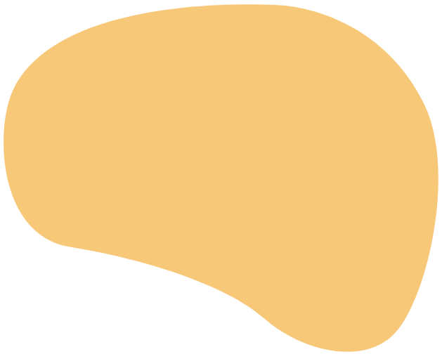
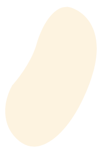
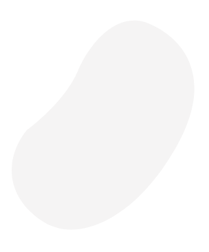
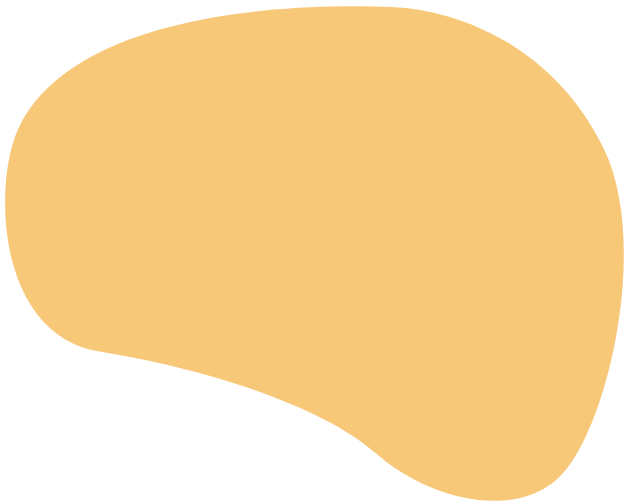
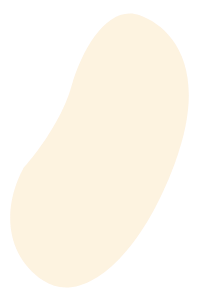
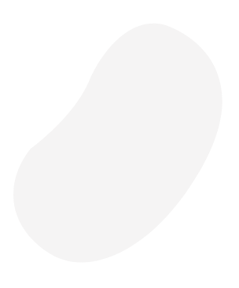

 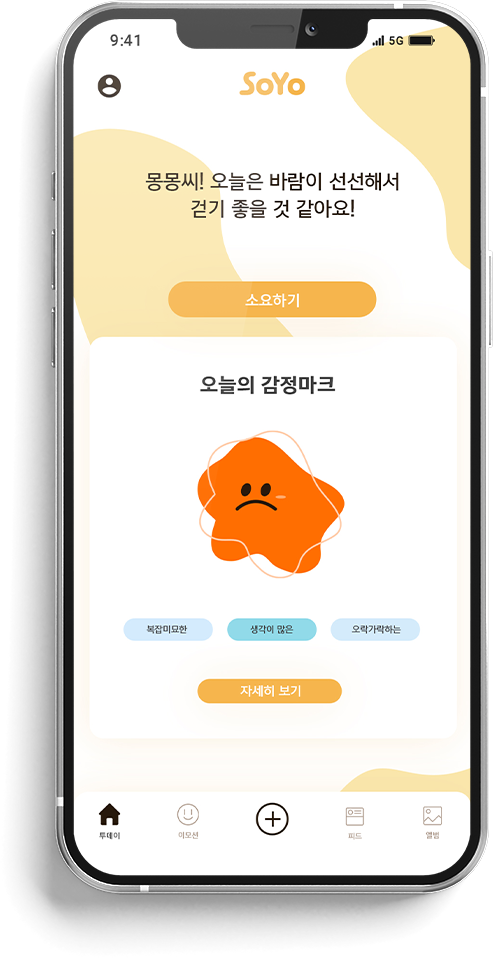
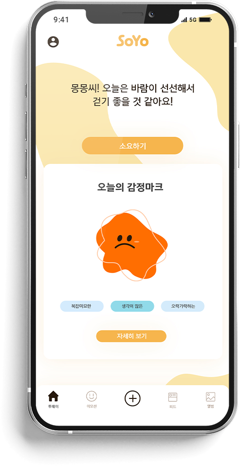
 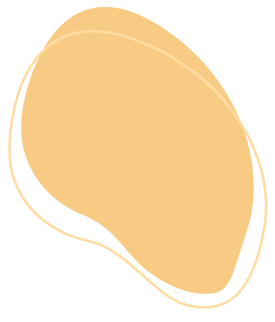
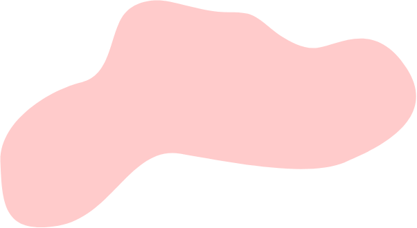
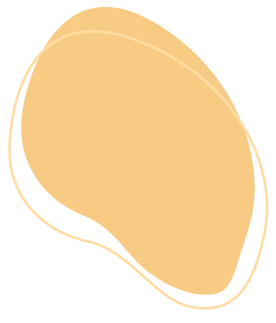
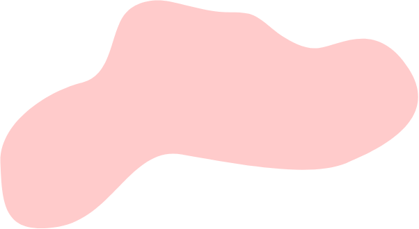
 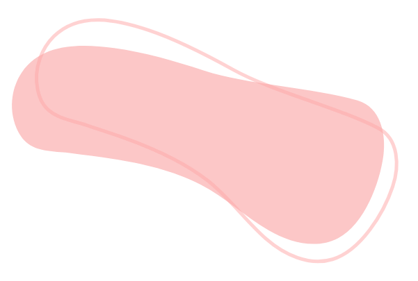
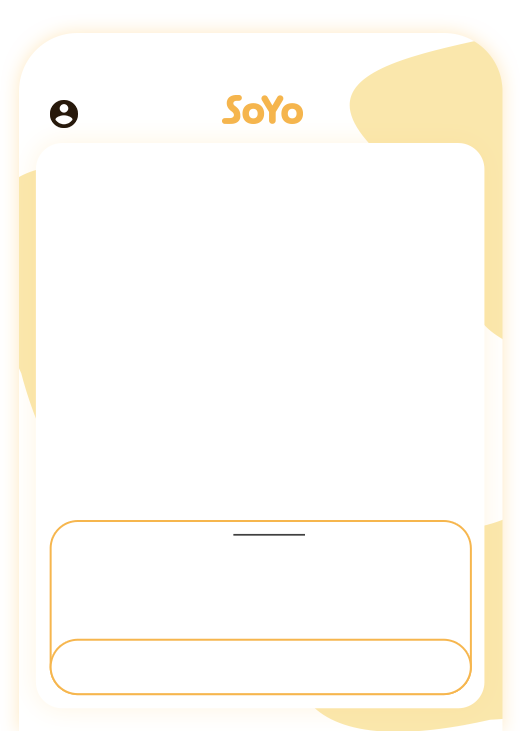
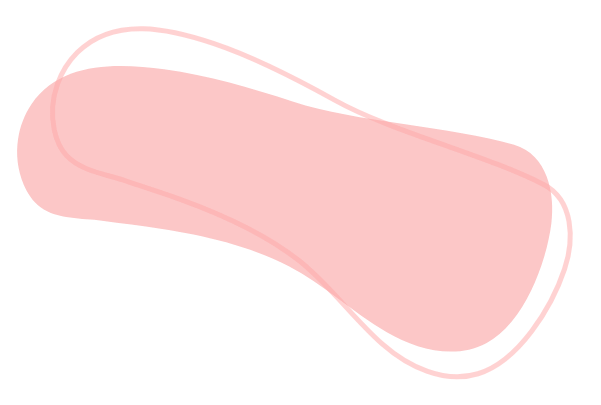
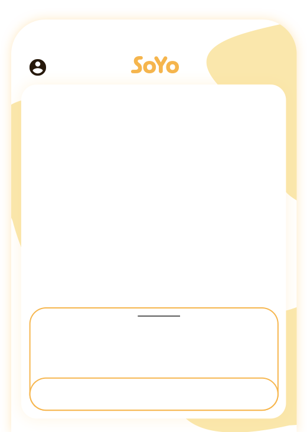


SoYo - 투데이
소요하기를 통해 산책 중 소요와 대화하며
그날 하루의 감정을 분석해줍니다.

-
"날씨도 좋은데 산책해보는 건 어때요?"
산책 친구 SoYo가 날씨 정보를 알려주며 산책을 제안해요.
-
“산책을 시작하여 SoYo와 대화를 나누어 볼까요?”
소요하기 버튼을 눌러 SoYo와 대화하며 산책해요.
-
“산책하면서 이런 색깔의 감정을 느끼셨네요?”
SoYo와 산책하며 나눈 대화를 분석하여 당신의 감정을 정의해줘요.
 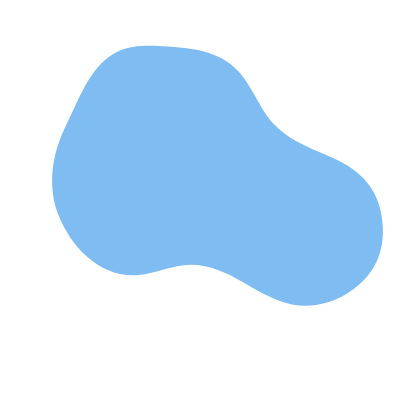
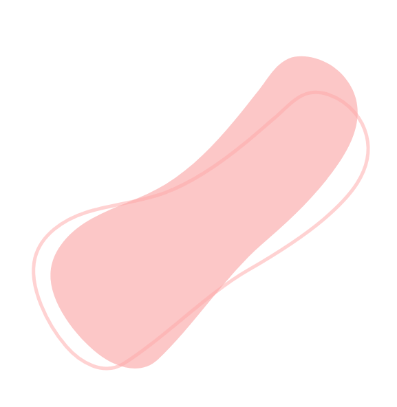
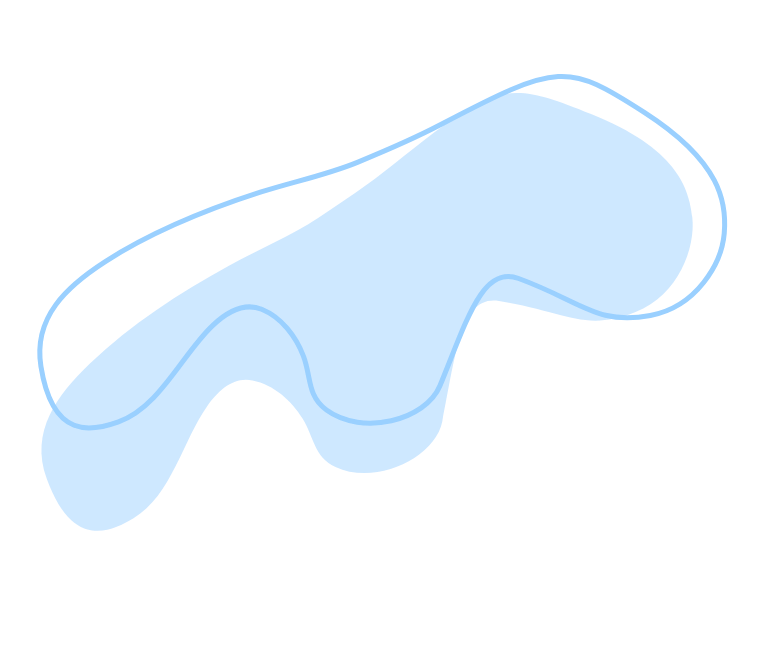
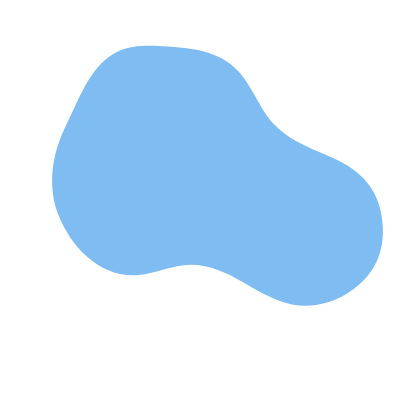
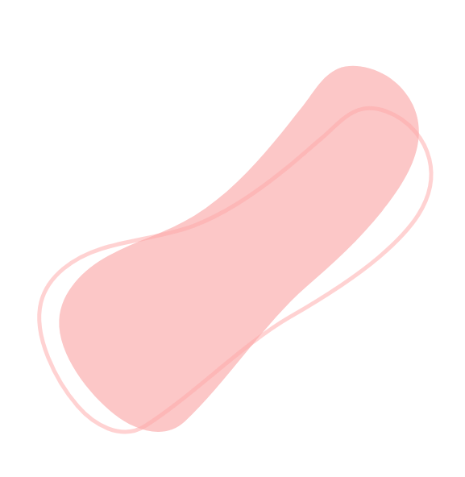
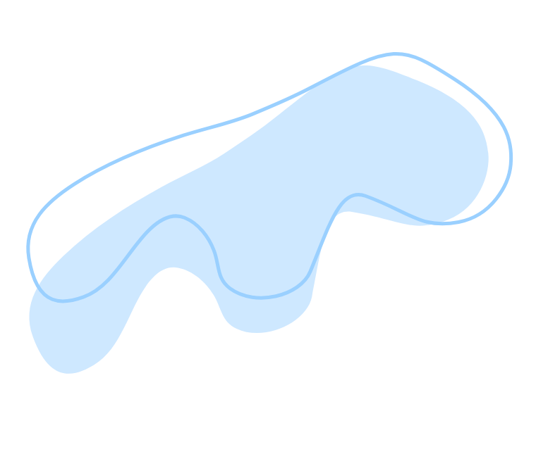